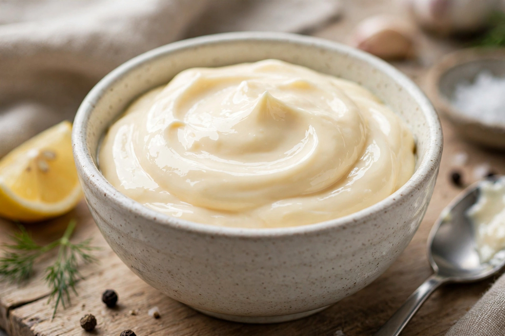

Wikipedia — the free encyclopedia

Mayonnaise is a thick, creamy sauce made by emulsifying egg yolk with oil, usually with an acid such as vinegar or lemon juice and often mustard as a stabiliser. It is one of the foundational sauces of French cuisine — classified by Escoffier among the mother sauces in its emulsion family — and the basis for many derivative sauces such as aioli, remoulade and tartar sauce.
The origin of the name is disputed: it may derive from Mahón in Menorca (mahonnaise), from Bayonne, or from Old French words for egg yolk or mixing. Mayonnaise became an industrial product in the early 20th century; Hellmann's (from 1913, New York) and Kewpie (Japan, 1925) are famous brands.
The emulsion is stabilised by lecithin in egg yolk, which coats the oil droplets. A sauce that "breaks" can often be rescued by whisking it into a fresh yolk. Commercial mayonnaise is typically 70–80% oil.